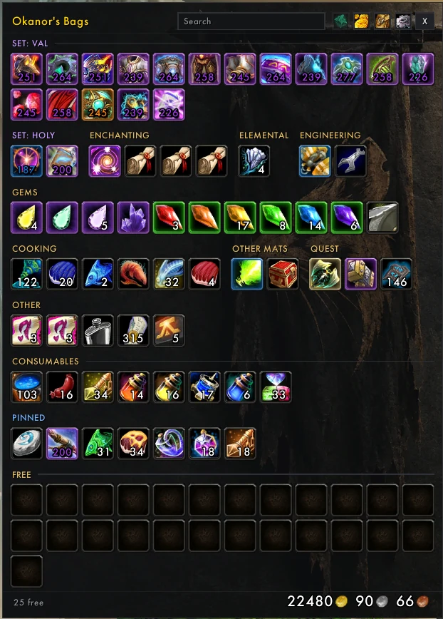
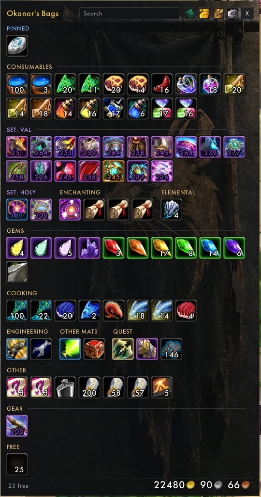
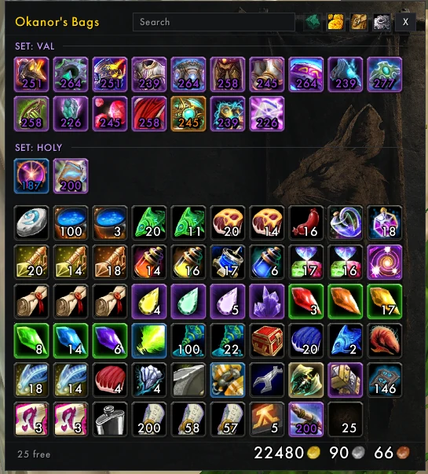
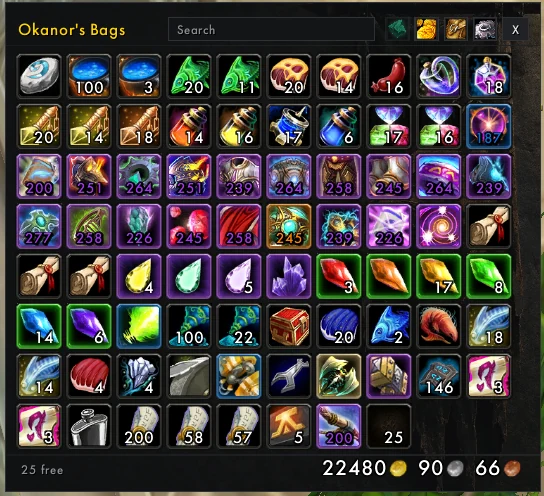
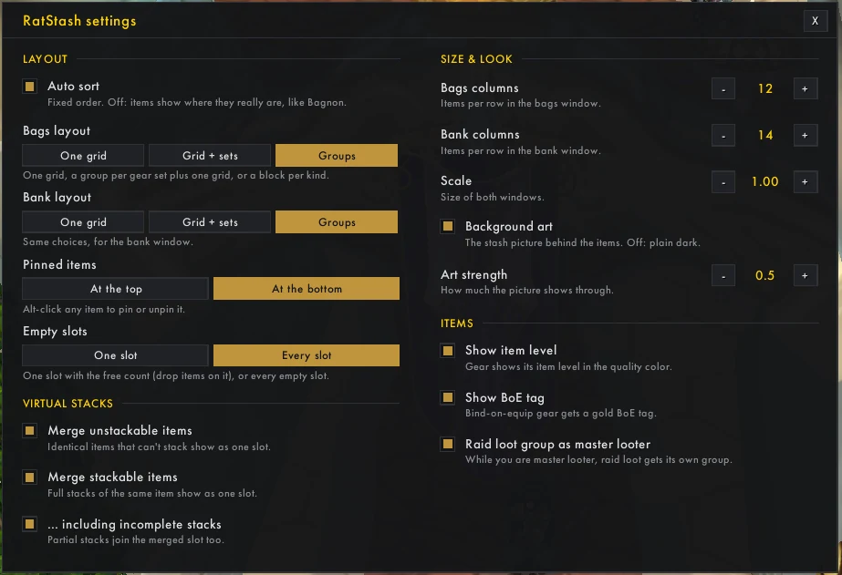
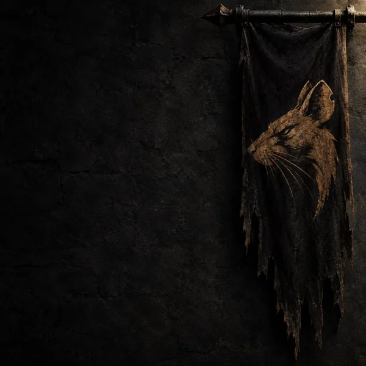
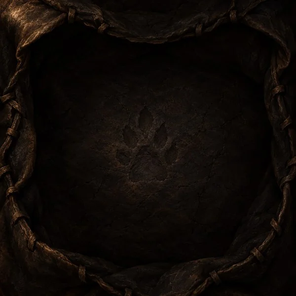

Raid loot never mixes with yours
Loot one Primordial Saronite in a PuG and it shows apart from your own six, glowing green with its trade timer, until you say it's yours. With Okanvil, reserved loot goes to [HR] Reserved.
WotLK 3.3.5a · Released
Bags and bank in one window each. Bagnon's single window, AdiBags' sorting, and a fixed order so nothing jumps around. Raid loot stays apart from your own stacks.

Pinned items, then your sets, then consumables, enchanting, gems, ore, herbs… and gear at the end. Free space always comes last, never in the middle.

Pick per window. The bank starts in blocks; small blocks share a row and fill the gaps.


Settings sit in their own window and are account-wide. Columns, scale and the banner behind your items, as strong or faint as you like.

Things you only notice when they're missing.
Loot one Primordial Saronite in a PuG and it shows apart from your own six, glowing green with its trade timer, until you say it's yours. With Okanvil, reserved loot goes to [HR] Reserved.
At a vendor, bank, mailbox or trade, identical gear splits back into one slot each.
One click at the bank moves stackables onto the stacks you already keep there.
Browse your bank from anywhere with /rst bank.
See your bag slots, drag a new bag onto one to swap it, buy bank slots.
The war banner behind your items and the leather pouch in every empty slot.


Turn off other bag addons (AdiBags, Bagnon, ArkInventory…) so they don't fight over your bags.
World of Warcraft\Interface\AddOns\RatStashB opens your bags, /rst bank your bank,
/rst options the settings.